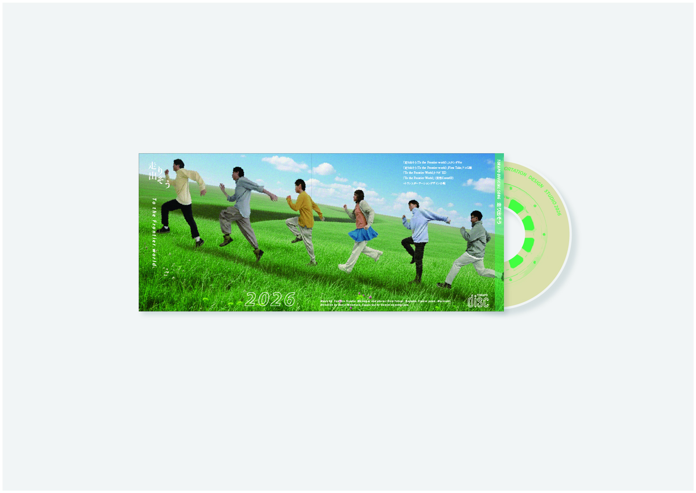
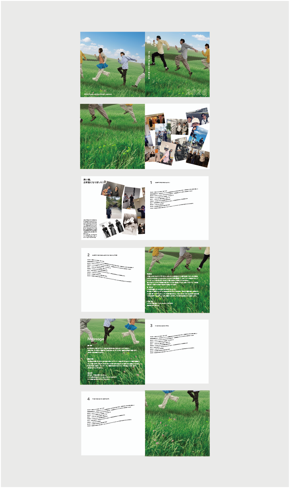

走り出せ to the frontier world
2025
大学院の卒業にあたって在校生、教授のためのプレゼントとしてCDを制作しました。卒業メンバー5人の写真をphotoshop、nanobananaを用いて合成して作成しています。中には研究室のAIテーマソング「走り出せ to the frontier world」の歌詞カードと卒業生のメッセージが刻まれたカードが入っています。
To commemorate our graduation from graduate school, we have created a special CD as a gift for our professors and junior students. The cover artwork features a composite photo of the five graduating members, crafted using Photoshop and nanobanana. Inside, you will find the lyrics to our lab's AI theme song, "Hashiridase to the frontier world," along with a card inscribed with messages from the graduates.